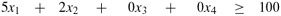

|
|
< Day Day Up > |
|
Many problems can be formulated as maximizing or minimizing an objective, given limited resources and competing constraints. If we can specify the objective as a linear function of certain variables, and if we can specify the constraints on resources as equalities or inequalities on those variables, then we have a linear-programming problem. Linear programs arise in a variety of practical applications. We begin by studying an application in electoral politics.
Suppose that you are a politician trying to win an election. Your district has three different types of areas-urban, suburban, and rural. These areas have, respectively, 100,000, 200,000, and 50,000 registered voters. To govern effectively, you would like to win a majority of the votes in each of the three regions. You are honorable and would never consider supporting policies in which you do not believe. You realize, however, that certain issues may be more effective in winning votes in certain places. Your primary issues are building more roads, gun control, farm subsidies, and a gasoline tax dedicated to improved public transit. According to your campaign staff's research, you can estimate how many votes you win or lose from each population segment by spending $1,000 on advertising on each issue. This information appears in the table of Figure 29.1. In this table, each entry describes the number of thousands of either urban, suburban, or rural voters who could be won over by spending $1,000 on advertising in support of a particular issue. Negative entries denote votes that would be lost. Your task is to figure out the minimum amount of money that you need to spend in order to win 50,000 urban votes, 100,000 suburban votes, and 25,000 rural votes.
|
policy |
urban |
suburban |
rural |
|---|---|---|---|
|
|
|||
|
build roads |
-2 |
5 |
3 |
|
gun control |
8 |
2 |
-5 |
|
farm subsidies |
0 |
0 |
10 |
|
gasoline tax |
10 |
0 |
-2 |
By trial and error, it is possible to come up with a strategy that will win the required number of votes, but such a strategy may not be the least expensive one. For example, you could devote $20,000 of advertising to building roads, $0 to gun control, $4,000 to farm subsidies, and $9,000 to a gasoline tax. In this case, you would win 20(-2) + 0(8) + 4(0) + 9(10) = 50 thousand urban votes, 20(5)+0(2)+4(0)+9(0) = 100 thousand suburban votes, and 20(3)+0(-5)+4(10)+9(-2) = 82 thousand rural votes. You would win the exact number of votes desired in the urban and suburban areas and more than enough votes in the rural area. (In fact, in the rural area, you have gotten more votes than there are voters!) In order to garner these votes, you would have paid for 20+0+4+9 = 33 thousand dollars of advertising.
Naturally, you may wonder if your strategy was the best possible. That is, could you have achieved your goals while spending less on advertising? Additional trial and error may help you to answer this question, but you would rather have a systematic method for answering such questions. In order to do so, we shall formulate this question mathematically. We introduce 4 variables:
x1 is the number of thousands of dollars spent on advertising on building roads,
x2 is the number of thousands of dollars spent on advertising on gun control,
x3 is the number of thousands of dollars spent on advertising on farm subsidies, and
x4 is the number of thousands of dollars spent on advertising on a gasoline tax.
We can write the requirement that we win at least 50,000 urban votes as
| (29.1) |
Similarly, we can write the requirements that we win at least 100,000 suburban votes and 25,000 rural votes as
| (29.2) |
and
| (29.3) |
Any setting of the variables x1, x2, x3, x4 so that inequalities (29.1)-(29.3) are satisfied is a strategy that will win a sufficient number of each type of vote. In order to keep costs as small as possible, we would like to minimize the amount spent on advertising. That is, we would like to minimize the expression
Although negative advertising is a common occurrence in political campaigns, there is no such thing as negative-cost advertising. Consequently, we require that
Combining inequalities (29.1)-(29.3) and (29.5) with the objective of minimizing (29.4), we obtain what is known as a "linear program." We format this problem as
| (29.6) |
subject to
| (29.7) |
| (29.8) |  |
| (29.9) |
| (29.10) |
The solution of this linear program will yield an optimal strategy for the politician.
|
|
< Day Day Up > |
|